사회적가치경영
인간존중의 기업 문화를 기반으로,
사업장에서 발생할 수 있는 위험요인을 파악하고 예방·관리하여
안전하고 쾌적한 근무 환경을 제공하고자 노력합니다.
안전보건경영
삼양식품은 안전보건 리스크 관리 프로세스를 더욱 체계화하기 위해
국제 안전보건경영시스템 (ISO 45001) 인증을 취득하였으며,
PDCA (Plan, Do, Check, Act)
사이클을 기반으로 현장의 안전과 보건에 대한 유해·위험 요인을 제거하고 선제적 예방 및 보호 조치를
취함으로써
근로자들이 안전하고 건강하게 일할 수 있는 환경을 만들어 가고자 합니다.
FSI 0.35 · LTIR 0.18 · OIFR 0.03
-
- approval_delegation
- 안전보건경영시스템 고도화
-
- person_shield
- 위험관리 강화
-
- connect_without_contact
- 안전문화 확산
-
- encrypted_add
- 안전역량 강화
안전보건경영 활동
인권경영
삼양식품은 글로벌 식품기업으로서 국제사회의 인권 원칙을 적극적으로 지지하고 있습니다.
국제연합(UN)의 ‘세계인권선언(Universal Declaration of Human Rights)’,
‘기업과 인권 이행지침(UN Guiding Principles on Business and Human Rights)’,
‘국제노동기구(International Labour Organization, ILO) 선언’
등에서 제시하는 국제적 인권 원칙을 바탕으로 삼양식품의 인권경영원칙을 수립하였습니다.
삼양식품 인권경영
-
- groups_2
- 강제노동 아동노동 금지
-
- person_apron
- 차별없는 고용 및 근무환경
-
- handshake
- 결사 및 단체교섭의 자유 보장
-
- engineering
- 산업안전 보장
-
- admin_panel_settings
- 책임있는 파트너 보호 및 관리
-
- nature_people
- 지역주민의 인권과 환경 보호
소비자중심경영
삼양식품은 고객 가치를 최우선으로 삼고 정직한 제품을 만들어가고자 합니다.
이에 모든 경영활동을 소비자의 관점에서 전개하는 소비자중심경영(CCM)을 도입하였습니다.
앞으로도 소비자 후생과 권익 증진 등 기업의 사회적 책임을 성실히 이행하겠습니다.
-
- finance_chip
- 경제
- Operation 개선을 통한
미래지향 기업 기반 구축
-
- temp_preferences_eco
- 환경
- 환경적 상생의 식자재 및
Food Tech Biz 육성
-
- diversity_3
- 사회
- 회사, 임직원, 협력사 간
상생의 기업 문화 구현
-
- apartment
- 기업
- 소비자중심경영 도입 및
대내외 경쟁력 강화
- 소비자중심경영(CCM) 인증
- 통합 VOC 체계 구축
- 사전 예방 강화 및 VOC 데이터 제공
- 지역적 편차 제거를 위한 전문 CS 담당 신설
소비자중심경영 인증
소비자 권익 증진을 위해 노력하고
소비자 후생 증대에 기여합니다.
지역사회상생
삼양식품은 삼양이건장학재단, 삼양원동문화재단과 함께 환경,
문화·예술, 교육 등
다양한 분야의 사회공헌 프로그램을 운영하며
차별 없는 사회와 지역사회 발전에 기여하고 있습니다.
또한, 임직원의 참여를 기반으로 나눔을 실천하고
지역사회협의체 등 다양한 이해관계자와 긍정적 관계를 형성함으로써
지속가능한 발전 기반을 구축해 나아가고 있습니다.
-
- 
- 삼양식품
- 사회와 기업, 지연환경, 미래세대가
함께 성장하고 발전하는
선순환 사회공헌을 실천합니다.
-
- school
- 삼양이건장학재단
- 지역사회 우수 인재를 양성하고,
미래 신성장 분야의 학문적 발전을 지원하는
공익법인입니다.
-
- brush
- 삼양원동문화재단
- 문화예술 저변을 확대하고,
나눔문화를 확산하는 비영리법인입니다.